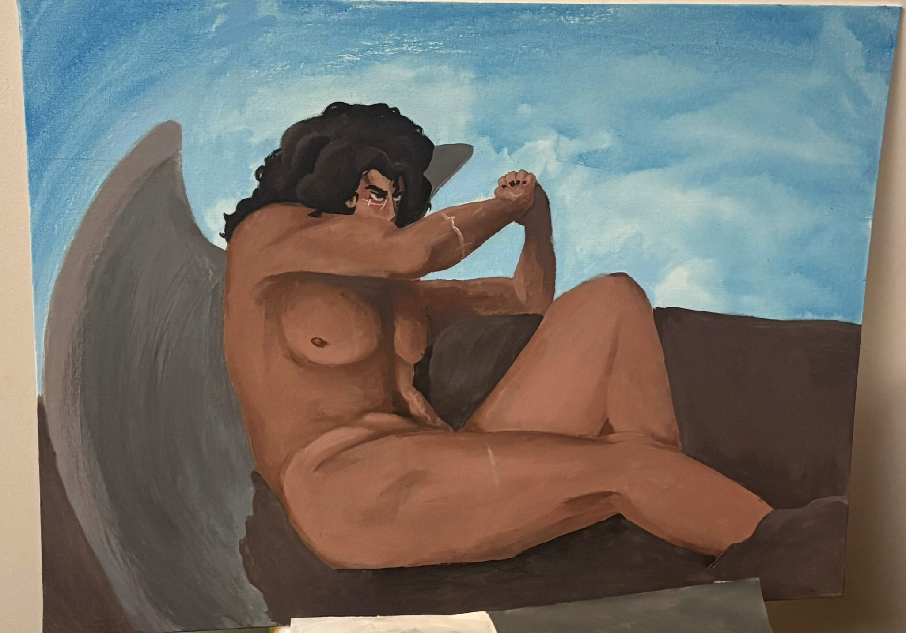

This is a test for my DIGIT100 class. This is an example of a relative link to a page inside the same folder.
In this, I will be practicing some different HTML things to try and learn how to use it properly like italics and bolding as well as including a link to an external
website inside text.
I'm also an artist, so here's one of my works.
A painting made of my original character based off of the painting The Fallen Angel by Alexandre Cabanel in 1847.
What did I use to make this painting?
Using a function called an unordered list, I shall tell you!
Canvas board (12x18in I believe)
Acrylic paint
Synthetic fiber paintbrushes
Several hours of work...
Water in a red solo cup
Some other things I painted for class.
Characters (usually my own)
Landscapes (though I'm not a big fan...)
Abstract piece
Still life pieces
Hey, look, a stylized image of a firebelly newt that Dr. B made as a web logo on newtfire.org!